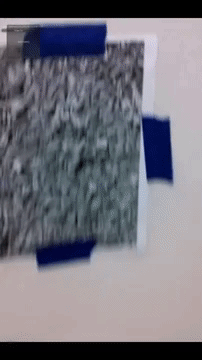

Overview
For AR-Catapults, we wanted to create an AR experience where players share a virtual space that exactly coincides with the real world. Each player has a Nexus tablet acting as a window into this augmented space, and we display a virtual model of the tablet in the same location. If the players can see each other, the virtual tablet and a simple avatar should be overlaid directly onto the real-world position of the other playerother player. If the players cannot see each other, the avatar and virtual tablet are still displayed, and each player gains x-ray vision through any walls or obstacles. This is the basic environment around which we wanted to design and implement a game.
Tablet Overlay Demonstration
As setup, each player should have a marker on a wall (or other vertical surface) that allows them to face towards the other. It does not matter which direction the marker is facing as we use the internal compasses to make the positive z direction align to magnetic north. Tracking information from Vuforia is used to handle the rest of syncing. There is a simple interface to connect via IP, and once they connect, each player is given a catapult (really more like a slingshot) for launching teapots at the other. When the game starts, a castle spawns behind each player and they begin attempting to topple the castle of the other player. Once enough blocks have fallen away from either castle, the game ends and a winner is declared.
GamePlay Demonstration
Determining Positions
The system works by having the server position itself at (0,0,0) in the virtual world. When players connect, they tell the server where they are in the world, and the server calculates an offset in Unity units for the player to move to. Furthermore, when first seeing a Vuforia marker, the player's device determines the offset between the direction the marker is facing in the real world (using the compass) and where it is expected to be facing in the virtual world and rotates the virtual marker to account for the difference. All virtual movements and rotations are then affected by these offsets, and players can see each other correctly. An important note is that we did not have much of a way to accurately get the real-world position of a player. GPS is not currently designed to work over the small distances (even as small as across a building) we designed for, so instead players may tell the server what offset they wish to be at when connecting.
Implemented Mixed Reality Mechanisms
Vuforia
The tracking library Vuforia gives us a position and rotation relative to the first marker that was successfully identified. We use this to maintain a constant world space defined by the marker into which we place the catapults and castles. The default functionality of Vuforia's Unity extension is to place the player's virtual camera, through which they see virtual objects, at the same position it holds in the physical world. This is extremely helpful and matches our game design fairly well, but it prevents us from offsetting the players from each other. Using the default position, each player will appear near the origin (the location of the markers in Unity space. To solve this, when a player joins the server, we construct a new camera that follows the movement and rotation of Vuforia's default camera but is offset by the user-specified distance mentioned above. This camera is the one displayed on the tablet, giving the player the impression that they are offset from the origin.
Compass
As mentioned above, Vuforia only provides a relative position and rotation of the player. Our use case does not
assume any predetermined position or orientation for the marker(s) being tracked. Since the user specifies their
offset, position is established at start time. However, we then have to determine the absolute orientation of
player's tablet in order to correctly place objects around them in virtual space, including the other player.
This is done with the aid of the compass. Once a marker has been found, we begin querying the tablet's compass
and rotate the game object representing the marker to match its real physical orientation. Because the scene is
based off of the marker's position and rotation, rotating the marker rotates the whole scene to correspond
correctly to the player's real-world orientation. However, the readings from the device's compass can be
inconsistent, and updating the marker continuously creates a great deal of jitter in the scene. To avoid this,
we continuously average the results given by the rotation offset calculation, causing the offset to rapidly
converge to the marker's actual rotation. The only disadvantage of this approach is that if the marker rotates
while the game is being played, it will take some time for this to manifest in the player's view of the game
world. Thus, we assume that the position and orientation of the marker remains constant throughout gameplay.

GPS
Potential Improvements
-We didnt really use GPS
-We do not account for different marker sizes
Design
Unity and Unet
We built our game in Unity, and accomplished communication between devices over Unity’s built-in Unet system. While John has a fair amount of experience in Unity, neither of us had ever actually programmed GUI’s in it before, so the menus are not very pretty or helpful. Unet uses a host-clients model, but any device can be a client. When setting up a game, one player starts a server on their device and the other connects to it. Unfortunately we had difficulty getting out tablets to accept messages from the other, and so instead during testing and the demonstration we set up one of our computers as the server (although not participating as a player) and had both tablets join as clients.
[Picture of menu]
When one of the tablets is used a server host, when it begins the server it checks it’s GPS location and decides that that location is (0,0,0) in Unity. When one of our computers is used a server, they cannot figure out their in-world position. Instead, when the first tablet connects and tells the server it’s GPS position, the server decides that that position is the origin and replies with an offset of (0,0).
Once the initial rotating and offsetting is done, we can easily use Unity’s default functionality for syncing object transforms to keep them correct. Each player independently tracks and updates their own position and Unet does the work of making the same changes on the other player’s screen. We also sync the positions of the the catapult components for each player and the positions of all the castle blocks. The flying teapots, crumbling castles, and checking for winning is all calculated on the server and displayed on the clients. Conversely, the “Pillguys”, the tall, mohawked avatars of the players, are never actually seen by the server and calculated and moved entirely locally. This means the teapots, which are calculated by the server, will not collide with them.
Working With Vuforia
Code Structure
-Followcube
-GPSScript
-ServerScript
-MultiTrackingScript